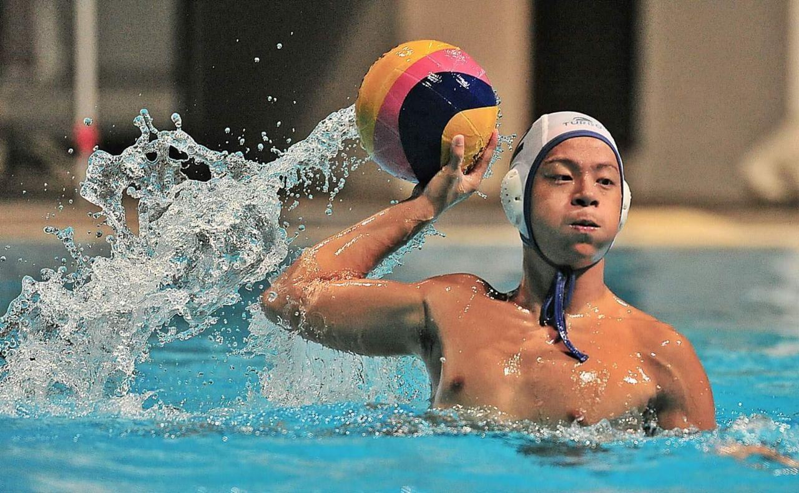
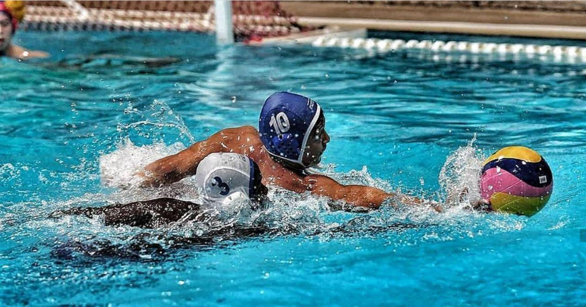
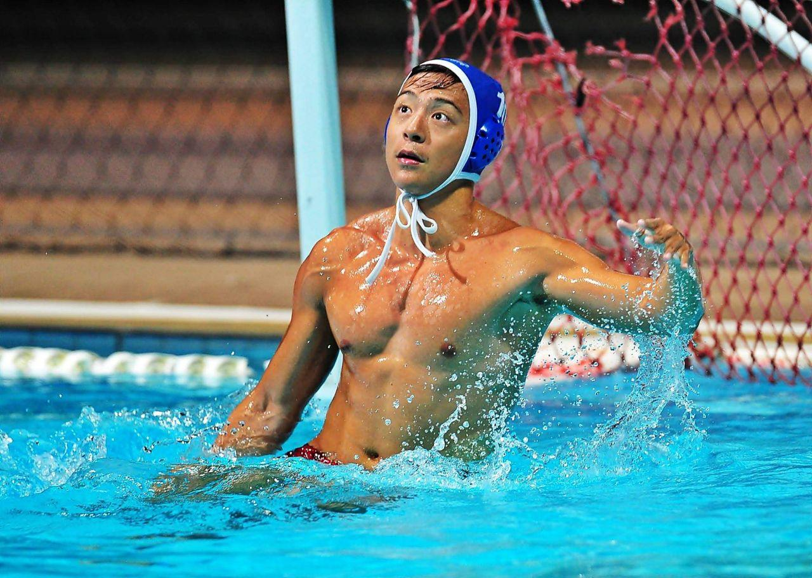

My name is Bao Xian!
I'm an Information Systems student from Singapore, aspiring to be a software developer / product manager.
This is my personal portfolio.
for a random fact about me!
Check out my other profiles in the buttons just below!
More about me...
Water Polo
I am a huge water polo lover. I've played the sport competitively since I was 14 in my various school teams, been part of the Singapore National Men's Water Polo team from 2016 to 2018, and captained the SMU team. I've also been a coach for many youth and school teams, coaching players between 9 to 17 years old.
Water polo has moulded my character, teaching me the very basics of discipline and hardwork, while also training me to work well in teams using good communication and leadership skills. Hence, even as I pursue a profession now away from this sport, the mindset I've inherited from water polo still very much defines me.
  
Tech!
I started my tech journey in 2018 after enrolling in the SMU School of Information Systems. From basic programming, I quickly picked up an interest for software development. I particularly enjoy the entire process of building solutions for real problems, from ideation all the way to the implementation and solution management.
In my projects, I always believe the end product is only as valuable as how well it addresses the problem it intends to solve. Therefore, as much as the technical specifications, I tend to focus on fitting the solution with the business process, user requirements, and the overall value proposition of any product.
Some of my projects are listed in the next section!
Start-Up Experience
In 2018, I started a company called HaBaWaBa Asia Pte Ltd. With my team, we secured the Asian rights for HaBaWaBa, the biggest international kids water polo festival. We then organized the festival here in Singapore (the first time in Asia), where there we had about 200 participants from 6 different countries over a span of 4 days.
My role was to pitch the festival and secure event partners and grants, manage corporate relations, as well as direct my team's execution of the festival.
My Projects
School Projects
Enterprise Solution Management
My team of 5 maintained, supported and managed stakeholders for an enterprise grade ticketing solution.
The applications were deployed on AWS EC2 and RDS servers, and my team was responsible for upkeeping the security and reliability of the systems, as well as performing any incident management.
Enterprise Solution Development
This project required my team to develop a solution from scratch, identifying the problem statement and scenarios before subsequently developing an
enterprise solution. The focus was on applying a microservices and service-oriented architecture while using a solution to improve a business process.
The project involved a role-play with professors acting as the CEO, CTO and product managers. Within my team, I was the IT Operations manager, and mostly handled stakeholder management and communication throughout the project lifecycle and even a simulated attack (incident), as well as coordinating my team's efforts.
My team developed a petrol kiosk checkout and rewards system which improved the process of refuelling petrol by integrating petrol selection, rewards and payment in a user-friendly application. The frontend was developed using Bootstrap CSS and jQuery, while the backend utilized Python Flask microservices with GraphQL built as a layer on top to provide flexible API calls. The services were built with Docker on our AWS EC2 instance, utilizing Kong as an API gateway and communicated with each other via AMQP messaging with a RabbitMQ server.
Other Projects
UGoDo - Personal Project
During the Circuit Breaker period in Singapore, I started on a task tracking application, designed with university students in mind, taking into consideration
the many concurrent projects they undertake during their school term and the challenges in coordinating tasks amongst their teams. This application allows the project leaders to assign tasks to team members, or users to self-assign tasks under a project, then tracks the productivity of the user,
and provides visualisation for the user's workload - useful in helping project leaders to decide who to assign tasks to (hence the name, 'U, go do').
Project Wheelspace - Google DSC Solution Challenge 2020
This was an IoT project targetted at improving the accessibility of MRT trains for wheelchair users. When trains are crowded, wheelchair users have difficulty boarding the trains, even at designated wheelchair areas, leading to them missing their trains.
Our concept was to install a button at the train station allowing the wheelchair-bound commuter to indicate his intention to board, triggering a signal inside the train carriage, encouraging commuters to make space for the oncoming passenger to smoothly board.
Using this project for my own learning, I incorporated a mix of C# and Python for the backend processing, utilizing the ASP.NET Core framework and Flask to create the web APIs, together with MongoDB for storage. For the frontend, I began with pure HTML, CSS and Javascript, but subsequently converted to using the Vue.js framework for the convenience and modularity of the Single File Components. This project is still work in progress!
My team developed the prototype on Raspberry Pis, utilizing Firebase to store the status of different train stations and oncoming trains. The processing logic was created on a Node-Red OS with Javascript, with LED lights and Microbit chips simulating train cabin indicators and buttons. The project was submitted as part of Google's DSC Solution Challenge 2020, and we are proposing the project to local MRT authorities to explore implementation opportunities.
Comments